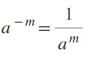

Exponenciación
Aprendiendo a trabajar con exponentes

Primera ley: Potencia de exponente igual a 1
Cuando el exponente es 1, el resultado será el mismo valor de la base: a1 = a.
Ejemplos
91 = 9.
22 1 = 22.
Segunda ley: Potencia de exponente igual a 0
Cuando el exponente es 0, si la base es distinta de cero, el resultado será:
a0 = 1.

Ejemplos
10 = 1.
323 0 =1.
Tercera ley: Exponente negativo
Como el exponte es negativo, el resultado será una fracción, donde la potencia será el denominador. Por ejemplo, a-m = 1/a m.
Ejemplos
3 -1 = 1/3.
6 -2 = 1 / 6 2 = 1/36.